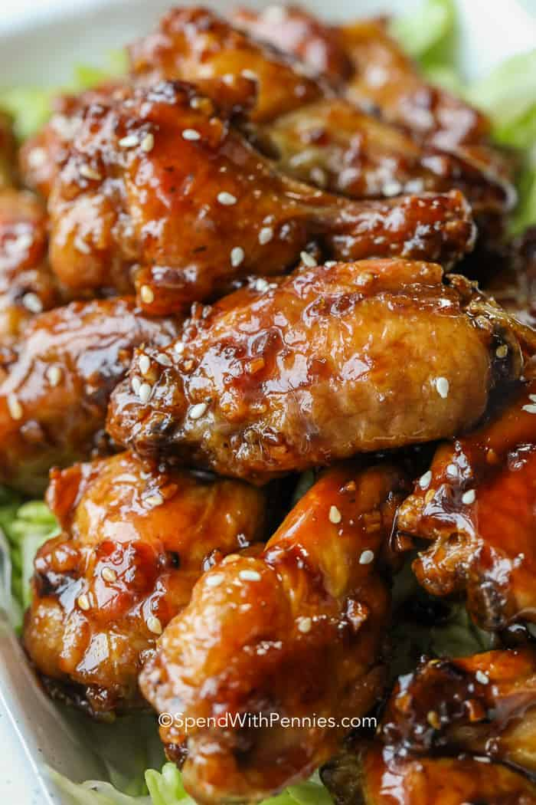

Honey Garlic Chicken Wings

Description
Sweet chicken wings made with onions, honey, and garlic!
Ingredients
- 1 large white onion, chopped
- ½ cup honey
- ½ cup brown sugar
- ¼ cup soy sauce
- ¼ cup butter
- 2 teaspoons mustard powder
- 1 ½ teaspoons garlic, minced
- 5 pounds chicken wings
Steps
- Stir onion, honey, brown sugar, soy sauce, butter, mustard powder, and garlic together in a saucepan over medium heat; cook until hot, about 5 minutes.
- Spread chicken wings in an even layer into a shallow baking dish; pour sauce over the wings.
- Marinate wings in refrigerate 1 hour to overnight.
- Preheat oven to 350 degrees F (175 degrees C).
- Bake the chicken wings, turning occasionally, until no longer pink at the bone and the juices run clear, about 90 minutes. An instant-read thermometer inserted near the bone should read 165 degrees F (74 degrees C).